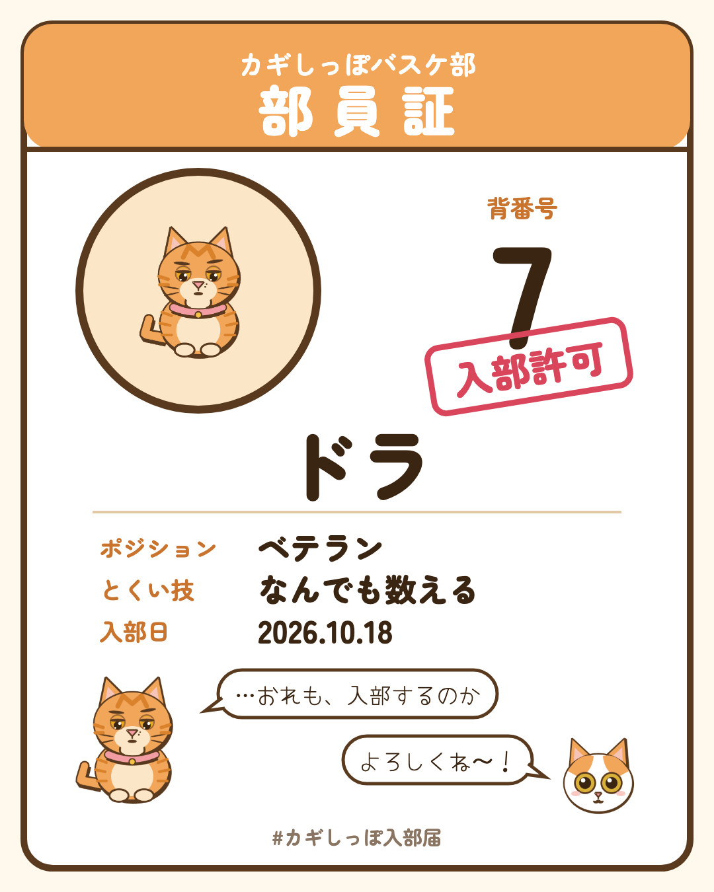

カギしっぽバスケ部入部届
入部の受付は、Threads のコメントで🐾
- Threads の @kagishippo_basket の投稿に、猫の写真と名前をコメントくせや、とくい技があれば、ひとことだけ（なくても大丈夫です）
- ドラが、その子をまんがの絵で描いて、部員証をプレゼント1週間に先着5匹まで。部員番号は入部した順です
- 入部した子は、12月の大会の客席にも描かれます

「…入部を、みとめる」
Threads をひらく まんがを1話から読む絵にして紹介してもよいか、先にお聞きします。